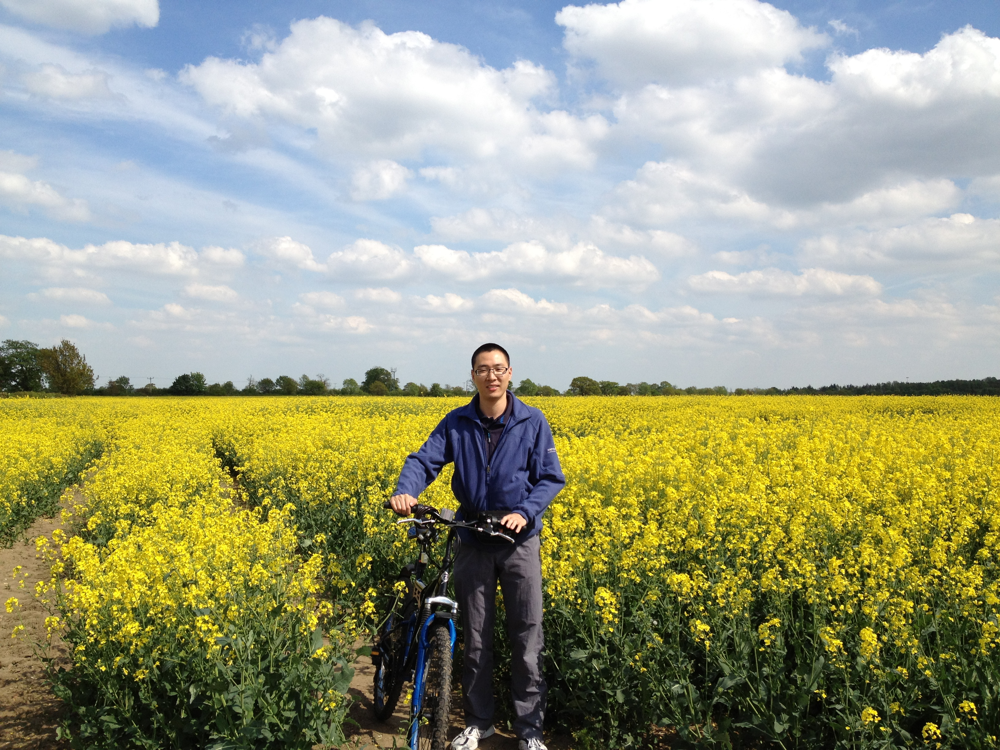

High Integrity Systems Engineering Research Group,
Department of Computer Science,
University of York.
Office: CSE/011, ground floor Computer Science Building
Telephone:
01904 325425
Email: xz972@york.ac.uk
I'm a PhD student in the Department of Computer Science at the University of York, England. Here is my Bio. Thanks for your interest.
My current research interests include:
Testing Method for Multi-UAV Conflict Resolution Using Agent-Based Simulation and Multi-Objective Search
Xueyi Zou, Rob Alexander, John McDermid
Journal of Aerospace Information Systems, April 2016
Validating Unmanned Aerial Vehicle Sense and Avoid Algorithms with Evolutionary Search
Xueyi Zou
Student forum of the 46th Annual IEEE/IFIP International Conference on Dependable Systems and Networks (DSN), June 2016
On the Validation of a UAV Collision Avoidance System Developed by Model Based Optimization: Challenges and a Tentative Partial Solution
Xueyi Zou, Rob Alexander, John McDermid
2nd International Workshop on Safety and Security of Intelligent Vehicles, DSN workshop, June 2016
Verification and Control of Partially Observable Probabilistic Real-Time Systems
Gethin Norman, David Parker, Xueyi Zou
13th International Conference on Formal Modeling and Analysis of Timed Systems (FORMATS 2015), September, 2015
Safety Validation of Sense and Avoid Algorithms Using Simulation and Evolutionary Search
Xueyi Zou, Rob Alexander, John McDermid
Proceedings of the 33rd International Conference on Computer Safety, Reliability and Security (SAFECOMP '14), September 2014
The methods of FPGA software verification
Ding Zheng, Wang Yichen, Zou Xueyi
IEEE International Conference on Computer Science and Automation Engineering, June 2011